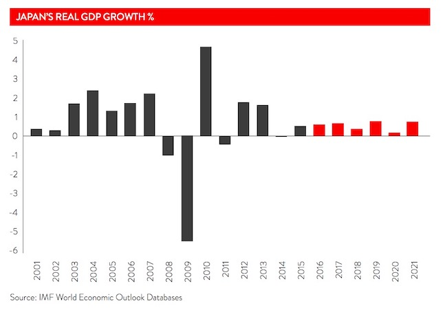

Economy
Japan is one of the largest and most developed economies in the world. It has a well-educated, industrious workforce and its large, affluent population makes it one of the world’s biggest consumer markets. Japan’s economy was the world’s second largest (behind the US) from 1968 until 2010, when it was overtaken by China. Its gross domestic product (GDP) in 2016 was estimated to be USD 4.7 trillion, and its population of 126.9 million enjoys a high standard of living, with per capita GDP of just below USD 40,000 in 2015.
With its phenomenal economic revival from the ashes of World War II, Japan was one of the first Asian countries to climb the value chain from cheap textiles to advanced manufacturing and services – which now account for the majority of Japan’s GDP and employment. Primary industries, including agriculture, account for just 1 per cent of GDP.

From the 1960s to the 1980s, Japan achieved one of the highest economic growth rates in the world. This growth was led by:
- High rates of investment in productive plant and equipment
- The application of efficient industrial techniques
- A high standard of education
- Good relations between labour and management
- Ready access to leading technologies and significant investment in research and development
- An increasingly open world trade framework
- A large domestic market of discerning consumers, which has given Japanese businesses an advantage in their scale of operations.
Manufacturing has been the most remarkable, and internationally renowned, feature of Japan’s economic growth. Today, Japan is a world leader in the manufacture of electrical appliances and electronics, automobiles, ships, machine tools, optical and precision equipment, machinery and chemicals. In recent years, however, Japan has ceded some economic advantage in manufacturing to China, the Republic of Korea and other manufacturing economies. Japanese firms have countered this trend to a degree by transferring manufacturing production to low-cost countries. Japan’s services sector, including financial services, now plays a far more prominent role in the economy, accounting for about 75 per cent of GDP. The Tokyo Stock Exchange is one of the world’s foremost centres of finance.
International trade contributes significantly to the Japanese economy, with exports equivalent to approximately 16 per cent of GDP. Key exports include vehicles, machinery and manufactured goods. In 2015-16, Japan’s major export destinations were the United States (20.2 per cent), China (17.5 per cent) and Republic of Korea (7 per cent). Despite a weaker yen as a result of stimulatory economic initiatives, export growth remains sluggish.
Japan has few natural resources and its agricultural sector remains heavily protected. Japan’s main imports include mineral fuels, machinery and food. In 2015, leading suppliers of these goods were China (25.6 per cent), the United States (10.9 per cent) and Australia (5.6 per cent). Recent trends in Japanese trade and foreign investment have reflected a much greater engagement with China, which overtook the United States as Japan’s largest trading partner in 2008.
Recent economic reforms and trade liberalisation, aimed at making the economy more open and flexible, will be important in helping Japan cope with its challenges. Following his December 2012 election victory, Prime Minister Abe has pursued a reformist agenda, dubbed ‘Abenomics’, implementing fiscal and monetary expansion as well as elements of structural reform that could liberalise the Japanese economy.
The rapid ageing of Japan’s population is set to reduce the size of the workforce and tax revenues while placing increasing demands on health and welfare expenditure. Labour-market reforms to increase participation are among the measures being used to counter this trend. Japan enjoyed a sharp uptick in growth in 2013 on the basis of Prime Minister Shinzo Abe’s ‘Three Arrows’ economic revitalisation agenda of monetary easing, ‘flexible’ fiscal policy and structural reform.